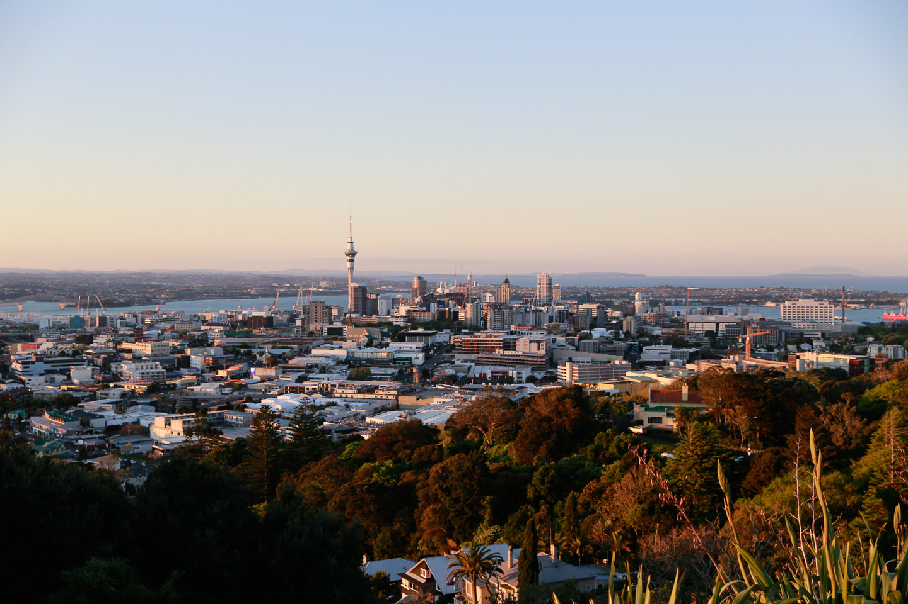
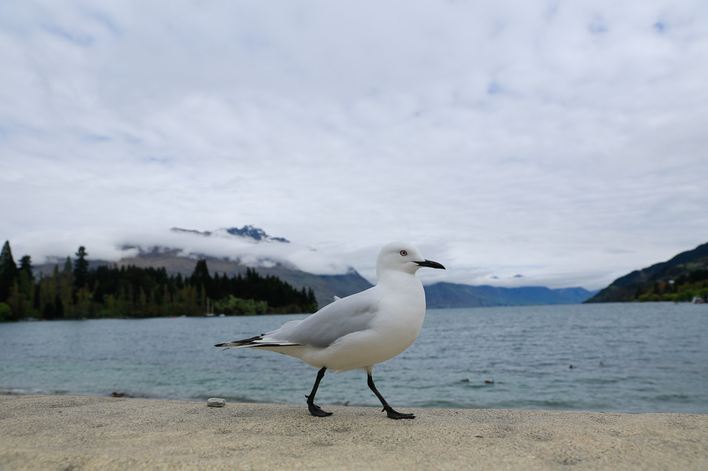
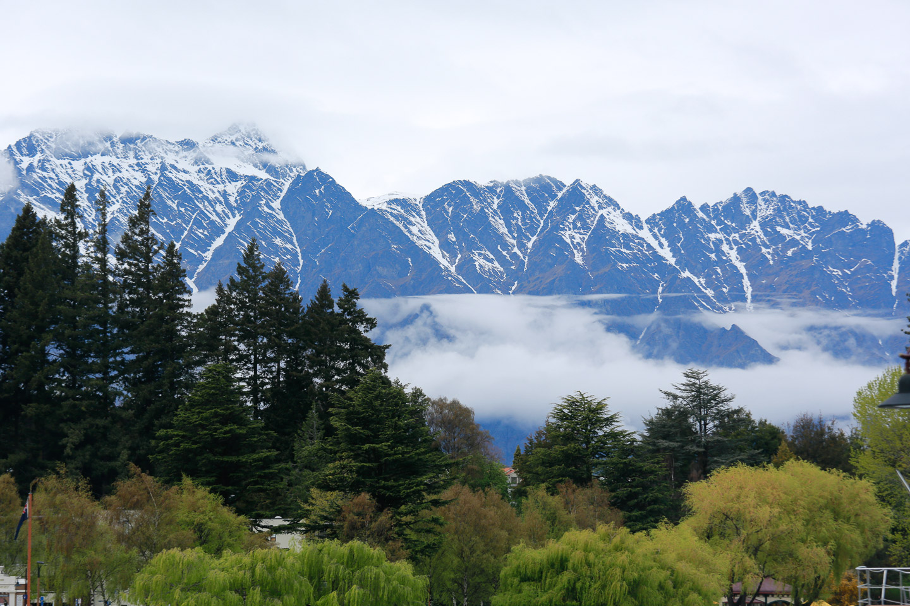
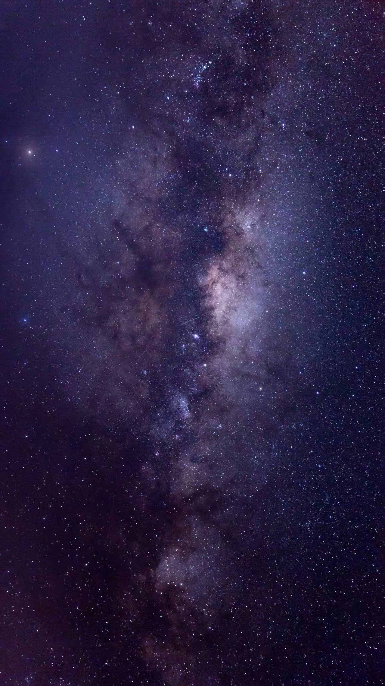
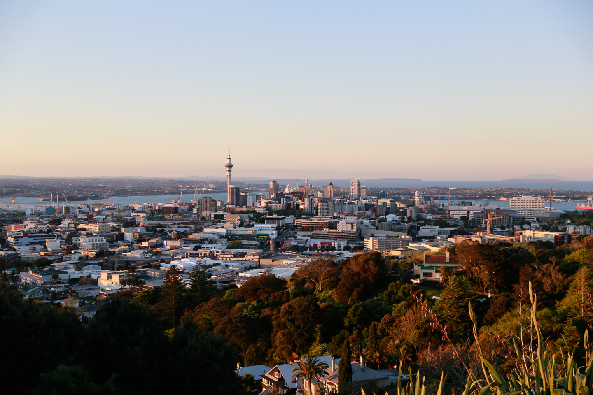
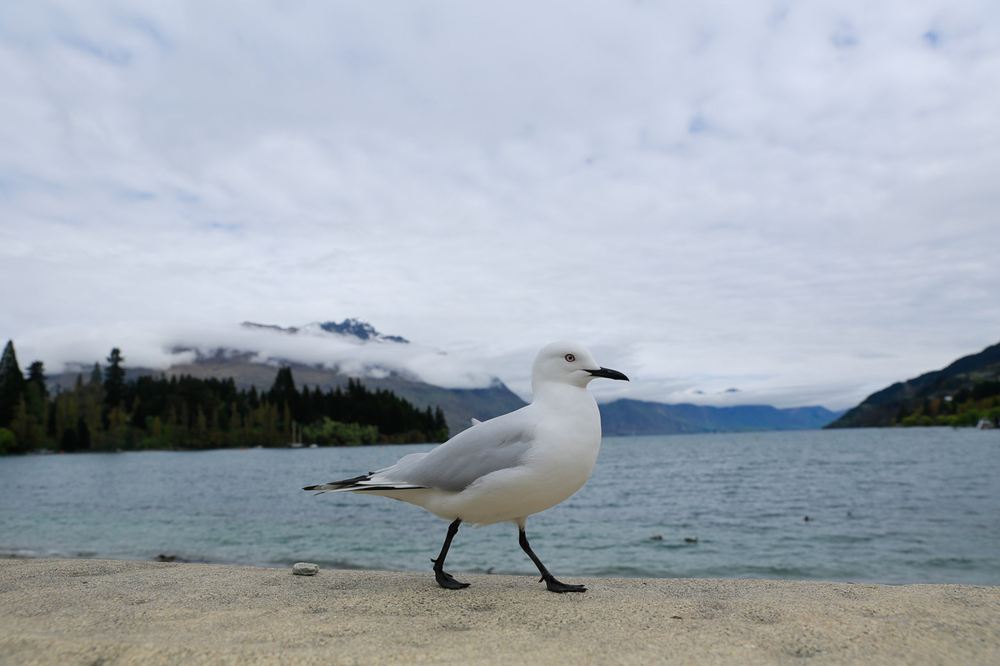
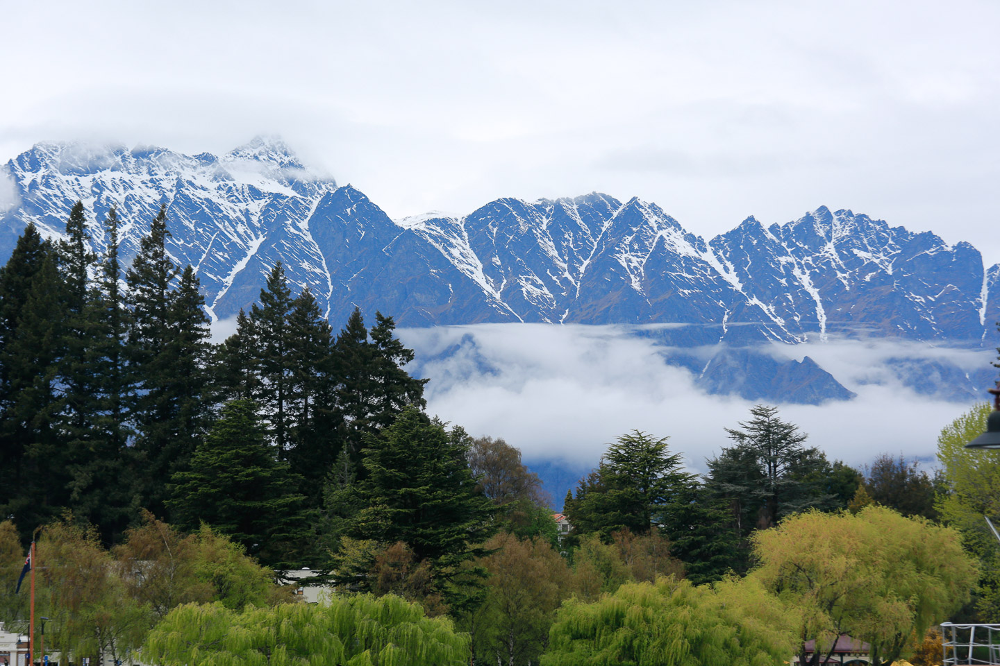
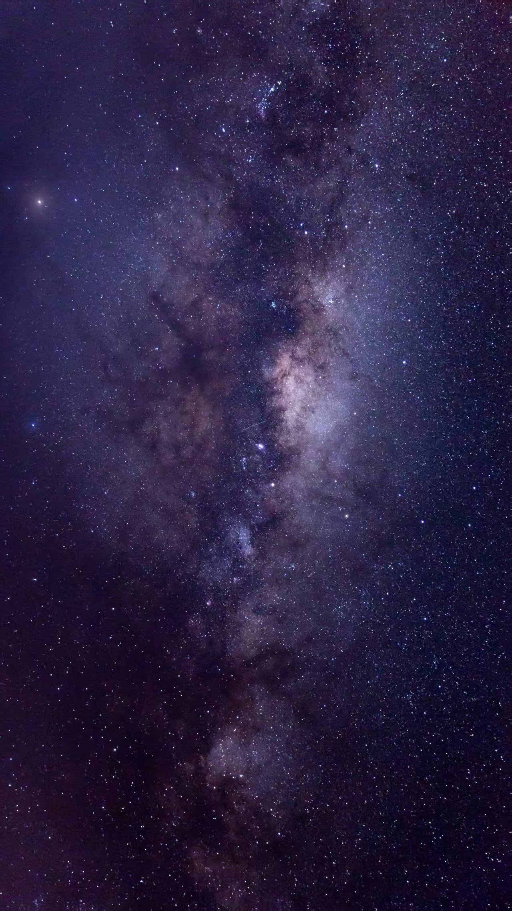

I broke my leg when I was running with the ball on the court.
On July 15, 2018, it was a sunny afternoon. As I was dribbling and running, I was hit by someone much older than me. My right tibia and fibula were fractured.
“I’m sorry, Mom. We can’t go to New Zealand anymore.”
We had originally planned our trip to New Zealand for August 1.
After four hours of surgery, when I woke up again, an external fixator had been placed on my leg.
I had always been such a child who loved life and loved sports— Swimming, tennis, basketball, soccer…
But now, I could no longer run, no longer jump.
For a long time, I would dream of running on the court, being knocked down, and breaking my leg. Being knocked down, and breaking my leg.
……………………
Those dreams woke me up again and again.
I felt like I would never be able to play sports again.
I sat in a wheelchair.
On September 29, 2018, the external fixator was removed in the hospital. Blood spurted high from the screw holes.
My mom said to me: “On October 4, we’re going to New Zealand.”
“Impossible. How could I? On crutches, in a wheelchair, to New Zealand? How could that be?”
Yet on October 4, 2018, I boarded the flight to Auckland.
On crutches, I flew 10,000 kilometers.
On crutches, I climbed Mount Eden.
On crutches, I visited Hobbiton and went to Bilbo Baggins’s home.
I went to Rotorua and watched the haka.
I went to Lake Tekapo and saw the vast starry sky.
In Queenstown, when I saw the Kawarau Bridge Bungy, I told myself: “When I recover, I will come back here.”
I even reached the southernmost city of New Zealand, Invercargill.
…………………………………………………………
That nightmare never returned again.
I went back to the soccer field.
I was still the key center player on the basketball court.
I would fall down again and again, but I knew I could always stand back up.
I would grow stronger, and braver.
I am no longer defined by the injury I once suffered, but by the strength I discovered through it. And with that strength, I am ready to face every challenge ahead.
 






